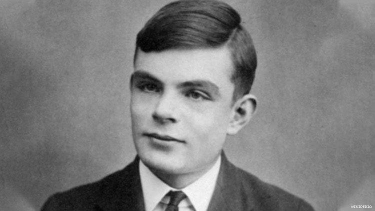

Sometimes it is the people no one can imagine anything of who do the things no one can imagine.
- Alan Turing
Widely regarded as the father of computer science, Alan Turing was born June 23, 1912 in London, England. He developed an interest as well as a strong understanding in mathematics and science at a young age, leading to him becoming top of his class at King's College (where he went for university). Shortly after his graduation, he was brought to Bletchley Park at the start of World War 2 to help with the war effort as a code breaker, specifically to tackle the challenging Enigma cipher machine. The importance of his contributions in the eventual cracking of the device helped the Allies win the war, and his further contributions to the field of computer science and artificial intelligence laid the path for the success we now see today in the two fields. He died in 1954 from cyanide poisoning (later confirmed as suicide) after being prosecuted for his homosexuality, a crime at the time in England. He was officially pardoned by the Queen in 2014, one of only four since the ending of the Second World War.
Turing's modified Bombe machine helped the Allies win the war
Turing's contributions to the study of Computer's started durings his years after graduation but before his work at Bletchley Park, when he came upon the idea of the Turing Machine. The principle (simplified) was that an individual Turing Machine that solved things one particular way, combined with multiple Turing machines could culminate into a universal Turing machine that could do any well defined task. This theory is now known as a computer, a combination of programs that can solve any task defined well enough to fit under the task's it is capable of running. But not only did he make contributions to computer science, but he also breathed life into artificial intelligence with the idea of the "Turing Test", testing whether a human would be able to distinguish the difference in answer between a computer and a human. This philosophical discussion is still at the root of many artificial intelligence debates to this day.
play a recognizable game of chess.